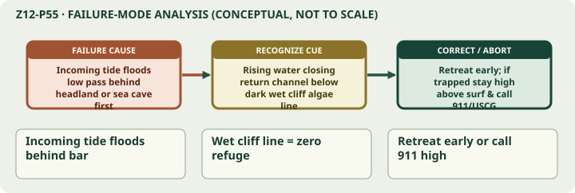

Z12-P55 · Extreme environments · New manuscript
Avoid tidal cutoffs along sea caves, narrow pocket coves and rocky points
Prevent fatal entrapment against sheer cliffs or inside sea caves by rapidly rising incoming tides.
When it applies · Rocky coastlines, tide-pool ledges, sea arches, pocket coves and wide estuarine mudflats.
Equipment · Watch, local tide chart, mapped high-tide bypass trails and emergency communicator.

Actions
- Identify wet dark algae/barnacle lines and lodged driftwood high against cliff bases—those lines mark where breaking surf reaches at normal high tide, leaving ZERO dry refuge underneath.[X15]
- Recognize that incoming tides flood low channels BEHIND sandbars and around rocky points first, quietly cutting off your return path while the spot you stand on still looks dry.[X15]
- Never enter deep sea caves, narrow cliff-walled coves or distant mudflat bars on a rising tide; always keep an unmistakable climbable high-ground exit behind you.[X15, T01]
Failure recognition · Exploring tide pools past a rocky headland during low tide without noticing incoming surf filling the low pass behind you.[X15]
Verify · Confirm your return point stays well above rising water and check your watch continuously against the incoming tide turn.[X15, ED]
Stop or change course · If incoming surf begins closing a rocky pass, retreat immediately BEFORE waves wash across footing—if already trapped on a safe high ledge above water, stay put, avoid jumping into crashing surf and call 911/Coast Guard.[X15, T02, X05]
Evidence and editorial notes
- T01 · American Red Cross · First Aid Steps (current web edition)
- Section: First Aid Steps > Check the scene; check the person · Conditions: Lay responder in United States; assess safety before contact
Support: Check scene safety, responsiveness, breathing and immediately life-threatening conditions.
Limitations: Lay guidance does not replace advanced clinical or rescue protocols. · Conflicting evidence: None; universal first-response opening gate.
Editorial note: Anchors scene-safety-first rule across Z01. · Specialist reviewer: EMS and wilderness medicine
Primary source · checked 2026-11-24 - T02 · American Red Cross · First Aid Steps (current web edition)
- Section: First Aid Steps > Call 9-1-1 · Conditions: Lay emergency response to unresponsiveness, abnormal breathing or severe bleeding
Support: Activate EMS and get needed equipment. Follow dispatcher directions and act within training.
Limitations: Remote locations may delay EMS arrival, requiring sustained stabilization after activation. · Conflicting evidence: None; aligns with NPS-E.
Editorial note: Mandates early emergency activation and dispatcher adherence. · Specialist reviewer: EMS and wilderness medicine
Primary source · checked 2026-11-24 - X05 · US Coast Guard · Boating Safety Resource Center (current web edition)
- Section: Boating Safety > Float Plans, VHF-DSC, Weather and Abandon-Ship Limits · Conditions: Inland large lakes, coastal waters and maritime travel
Support: File a float plan, monitor marine weather and VHF Channel 16/DSC where equipped, stay with a swamped buoyant hull when safer than swimming to distant shore and maintain visual/electronic distress signals.
Limitations: Open-water craft operations require vessel-specific seamanship beyond general survival cards. · Conflicting evidence: None; aligns with NOAA-MARINE and NOAA-SARSAT.
Editorial note: Anchors maritime communication, hull-stay and distress cards in Z12. · Specialist reviewer: Maritime safety and USCG-aligned review
Primary source · checked 2026-11-24 - X15 · NOAA NOS · Tides and Water Levels Education Tutorial (current web edition)
- Section: Tides and Water Levels > Tidal Range, Cutoffs and Currents · Conditions: Ocean coastlines, sea caves, tidal flats and rocky headlands
Support: Tidal cycles raise water levels rapidly along shallow flats, narrow coves and rocky headlands, trapping hikers against cliffs and generating strong reversing currents in inlets; verify local tide tables before entering coastal routes.
Limitations: Wind-driven storm surge and king tides push water well above normal predicted high-tide marks. · Conflicting evidence: None; pairs with NOAA-COAST.
Editorial note: Grounds tidal-cutoff, headland and mudflat planning cards in Z12. · Specialist reviewer: Coastal navigation and marine safety
Primary source · checked 2026-11-24
Source lineage · NOAA tides and coastal safety; new manuscript · Classification · New manuscript.